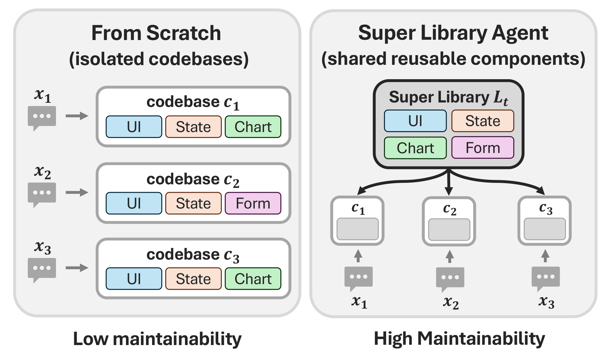
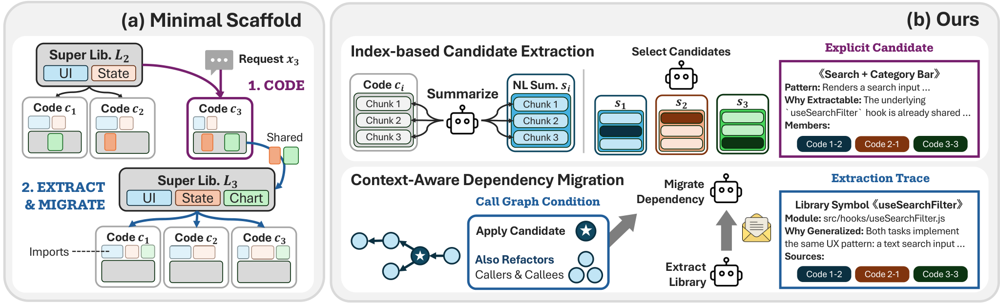
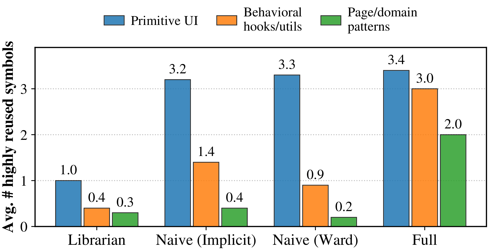

We group related benchmark tasks into suites and process each suite sequentially. Every method builds the same WebGen-Bench and PaperBench portfolios, which we compare for functionality and joint-codebase maintainability.
Motivation
The Cost of Building Related Applications in Isolation
Organizations maintain application portfolios whose independently deployable applications share domain logic, interface patterns, and operational conventions. Generating each application in isolation duplicates these concerns and forces common updates to be repeated across the portfolio. SLA instead builds the portfolio sequentially while maintaining one reusable library.

Problem Definition
Super Library Agent Problem
Requests arrive one at a time. At each step, the agent generates the new application, updates the Super Library, and patches earlier applications when they should use the new shared code.
Step t
(ct, C′<t, ℒt)
= 𝒜(xt, C<t, ℒt−1)
Generate the next codebase and update both the previous portfolio and its shared library.
Shared components
ℒ★t
= { u ∣
t∑i=1
𝟙[use(u, ci)] ≥ 2 }
The ideal library contains components used by at least two applications.
Objective
max𝒜
( Sfunc(CN, X),
Smaint(CN, ℒN) )
Seek a favorable Pareto trade-off between application functionality and joint-codebase maintainability.
Notation
- X
- the sequence of application requests
- ct
- the application generated at step t
- C<t
- the applications generated before step t
- ℒt
- the Super Library after step t
- 𝒜
- the agentic workflow that jointly generates and maintains the portfolio
Method
Super Library Agent
SLA-Full turns shared-library construction into an explicit part of sequential application generation. It separates reuse discovery from dependency migration and gives each agent structured context for deciding what to extract and how to update every affected codebase.

How SLA-Full Addresses the Challenges
Naive scaffold
Low extraction recall
Blocks that do the same thing often look nothing alike, so grouping them by code text or embedding similarity misses them. Reuse that is really there never gets found.
Broken migration
Replacing a local implementation means editing its imports and call sites together. The naive agent swaps the call and leaves the imports, the callers and the dead helper behind.
Ours
Index-based candidate extraction
- Code-summary indexes
- Blocks are summarized in plain language and matched on what they do, not on how they are written.
- Pre-extraction consolidation
- Each codebase is cleaned against itself first, so the cross-application step sees clean units, not near-copies.
Context-aware dependency migration
- Extraction traces
- Extraction records where each symbol came from and how to replace it, so migration does not rediscover it.
- Call-graph conditioning
- Each edit site arrives with its imports and callers attached, so dependents are updated and the dead copy removed.
Results 01
Initial Portfolio Construction
| Functionality | Maintainability | ||||||
|---|---|---|---|---|---|---|---|
| Method | Acc ↑ | Appr ↑ | LOC ↓ | Tok ↓ | MDL ↓ | Eros ↓ | Verb ↓ |
| Zero-Shot | 76.04 | 3.84 | 9393 | 70364 | 34875 | 0.1032 | 0.1603 |
| Librarian (K=8) | 75.78 | 3.89 | 8973 | 68159 | 33919 | 0.1352 | 0.1472 |
| Naive-Implicit | 76.95 | 3.89 | 9133 | 69777 | 35103 | 0.1567 | 0.1408 |
| Naive-Ward | 76.07 | 3.90 | 8786 | 67774 | 34675 | 0.1250 | 0.1370 |
| SLA-Full | 77.21 | 3.86 | 8552 | 65633 | 34195 | 0.0987 | 0.0994 |
| Δ vs Zero-Shot | +1.5% | +0.5% | −9.0% | −6.7% | −1.9% | −4.4% | −38.0% |
| Functionality | Maintainability | ||||||
|---|---|---|---|---|---|---|---|
| Method | Acc ↑ | Appr ↑ | LOC ↓ | Tok ↓ | MDL ↓ | Eros ↓ | Verb ↓ |
| Zero-Shot | 0.4687 | — | 6578 | 68603 | 30342 | 0.2558 | 0.8665 |
| Librarian (K=8) | 0.4591 | — | 6551 | 68297 | 30400 | 0.2527 | 0.8628 |
| Naive-Implicit | 0.4802 | — | 6445 | 66539 | 29850 | 0.2882 | 0.8582 |
| Naive-Ward | 0.4720 | — | 6440 | 66028 | 29568 | 0.2761 | 0.8645 |
| SLA-Full | 0.4809 | — | 6252 | 63514 | 29489 | 0.2291 | 0.8490 |
| Δ vs Zero-Shot | +2.6% | — | −5.0% | −7.4% | −2.8% | −10.4% | −2.0% |
Results 02
Post-Construction Maintenance
We request one shared update for each completed WebGen-Bench suite. The same edit agent applies it to every method, allowing us to compare preserved functionality and patch size.
| Patch size | Functionality after the patch | |||||
|---|---|---|---|---|---|---|
| Method | Total ↓ | App ↓ | Library | Original ↑ | Requested ↑ | Appr ↑ |
| Zero-Shot | 936 | 936 | 0 | 77.9 | 81.9 | 3.93 |
| Librarian | 522 | 500 | 22 | 74.0 | 76.9 | 3.83 |
| Naive-Implicit | 632 | 618 | 14 | 76.9 | 82.9 | 3.82 |
| Naive-Ward | 380 | 363 | 18 | 77.7 | 81.1 | 3.95 |
| SLA-Full | 256 | 232 | 24 | 77.4 | 80.0 | 3.86 |
Analysis
Library Reuse and Abstraction Quality
01 · A Real Super Library from an Eight-Application Suite
Extracted by SLA-Full from an eight-application suite. Badges indicate the number of applications importing each symbol.
02 · Applications after Dependency Migration
Representative applications after SLA-Full migrates shared dependencies into the Super Library.
03 · Higher-Level Abstractions Extracted by SLA-Full
Highly reused symbols show that SLA-Full extracts task-level abstractions, not only low-level utilities.

| Method | Primitive UI | Behavioral hooks / utils | Page / domain patterns |
|---|---|---|---|
| Librarian | FooterHeader |
useLocalStoragesaveToStorage |
ContactFormLoginForm |
| Naive-Implicit | HeaderFooter |
useLocalStorageuseFormValidation |
ContactFormKpiCard |
| Naive-Ward | HeaderCard |
useLocalStoragecreateAuthContext |
ContactForm |
| SLA-Full | NavigationBarSection |
useRouteruseFilteredList |
FeatureCardGridMessageBanner |
Limitations
- No benchmark is built for this setting. We adapt single-task coding benchmarks into sequential suites, but they were not designed to test library growth over many rounds or reuse across applications. The applications we maintain are benchmark artifacts with no users, no commit history, and no production constraints, so we cannot say whether the smaller patch holds on real software. We also measure one maintenance round rather than a sequence, so we do not see how the library holds up as requirements keep changing, or how errors compound.
- Maintainability is measured by proxy. Code size, duplication, verbosity, and library use are useful signals about abstraction and reuse, but they do not show that a codebase is easier to read, change, or extend. Maintainability really shows up over repeated future changes; what we have is static properties of the final codebases plus one maintenance round.
Citation
Provisional. pages and the Anthology url follow publication.
@inproceedings{sla2026,
title = {{Super Library Agent}: Joint Generation and Maintenance of Multiple Applications Beyond the Single Codebase},
author = {Sung, Daegyu and Lee, Yukyeong and Park, Geon and Choi, Yumin and Hwang, Sung Ju},
booktitle = {Findings of the Association for Computational Linguistics: EMNLP 2026},
month = oct,
year = {2026},
address = {Budapest, Hungary},
publisher = {Association for Computational Linguistics}
}